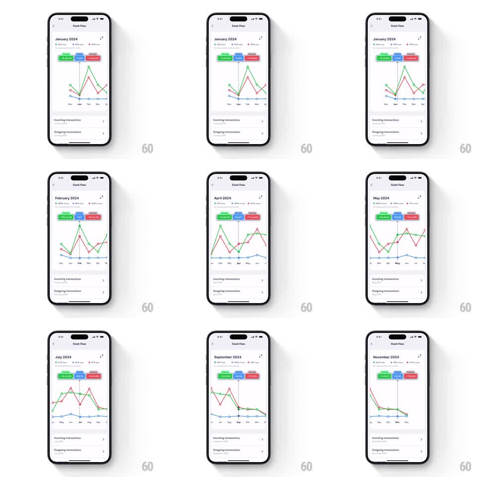

Media
Frame-by-frame

Rebuild this interaction 1:1: Fold's cash flow graph - drag horizontally across a multi-line chart and a vertical indicator snaps month to month, updating the month title and the three colored stat badges above the graph.

Rebuild this interaction 1:1: Fold's cash flow graph - drag horizontally across a multi-line chart and a vertical indicator snaps month to month, updating the month title and the three colored stat badges above the graph.
## Integration
Integration: stack-agnostic spec - springs given as stiffness/damping, timed motions as duration + curve; map every value to your framework and animation library of choice.
## Scene
Fold's "Cash Flow" screen: a line chart with three thin colored lines (green, blue, red) traced across a horizontal month axis, grid dots at each data point. Above the chart sit three rounded stat badges - green, blue, and red amounts - below a bold "January 2024" month title with small delta percentages. Below the chart, "Incoming transactions" and "Outgoing transactions" list rows. Dragging scrubs a vertical indicator line across the months.
## Motion spec
Pattern: scrub with snap, gesture-driven.
- The drag tracks 1:1: the vertical indicator line follows the finger across the chart, crossing the grid.
- On release or on crossing a midpoint, the line snaps to the nearest month column (spring stiffness 400 damping 28), landing on that month's data points, which highlight.
- The month title crossfades to the new month ("February 2024", "April 2024"...) and the three badges update with the month's amounts, their numbers crossfading (200ms).
- The two transaction rows below refresh in step with the selected month.
## Calibration
- Snap only - the indicator never rests between months.
- Badge values change every snap; the lines themselves are static geometry.
## Reduced motion
Indicator jumps on release; values swap without crossfade.
## Don't miss
- The indicator is a thin line spanning the chart height, with the three badges as the live readout above.
- Month title, badges, and list rows always agree - one snap updates all three.